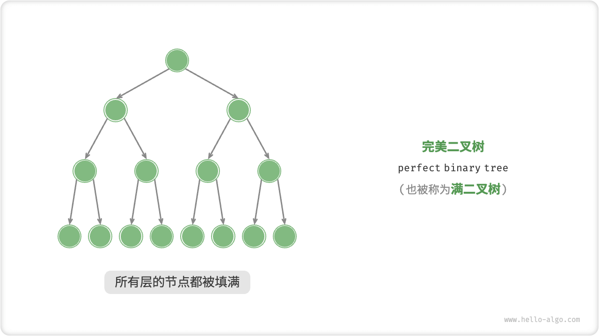
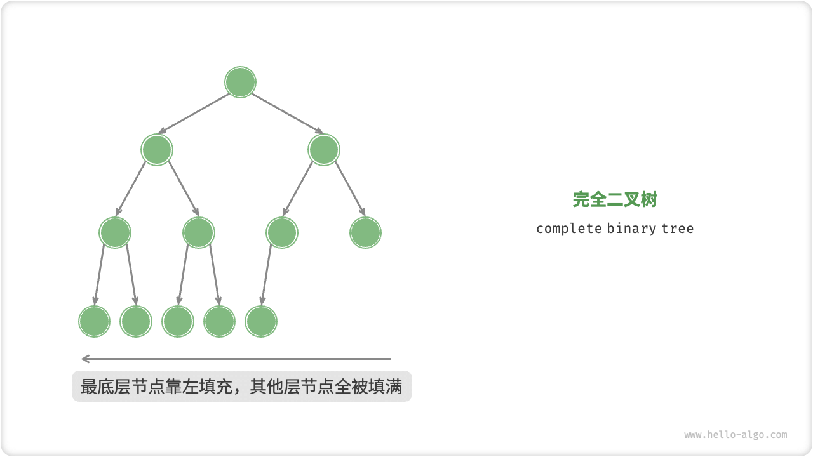
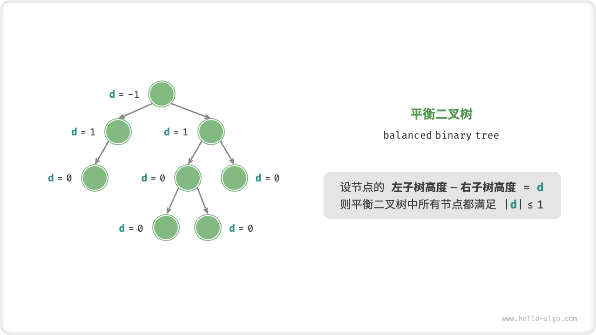
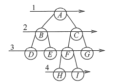
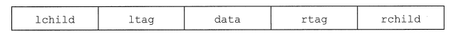
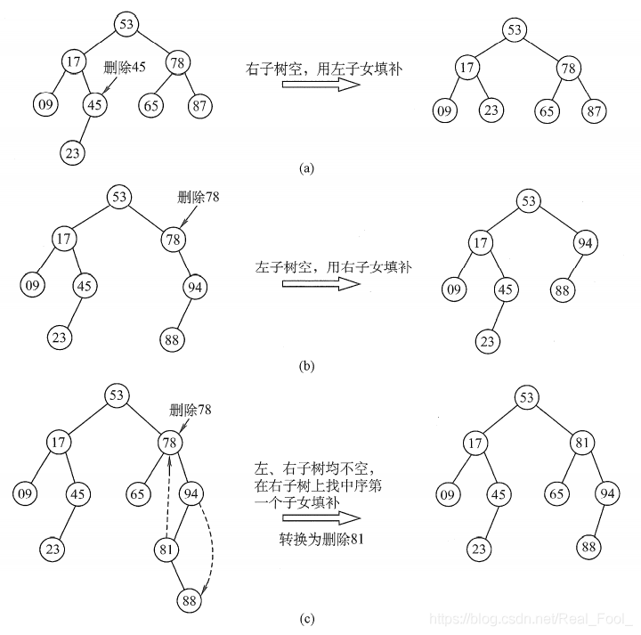

Chapter 7 树¶
参考笔记
二叉树¶
/* 二叉树节点结构体 */
typedef struct TreeNode {
int val; // 节点值
int height; // 节点高度
struct TreeNode *left; // 左子节点指针
struct TreeNode *right; // 右子节点指针
} TreeNode;
/* 构造函数 */
TreeNode *newTreeNode(int val) {
TreeNode *node;
node = (TreeNode *)malloc(sizeof(TreeNode));
node->val = val;
node->height = 0;
node->left = NULL;
node->right = NULL;
return node;
}
常见术语¶
- 「根节点 root node」：位于二叉树顶层的节点，没有父节点。
- 叶节点 leaf node」：没有子节点的节点，其两个指针均指向 \(\text{None}\) 。
- 边 edge」：连接两个节点的线段，即节点引用（指针）。
- 节点所在的「层 level」：从顶至底递增，根节点所在层为 1 。
- 节点的「度 degree」：节点的子节点的数量。在二叉树中，度的取值范围是 0、1、2 。
- 二叉树的「高度 height」：从根节点到最远叶节点所经过的边的数量。
- 节点的「深度 depth」：从根节点到该节点所经过的边的数量。
- 节点的「高度 height」：从距离该节点最远的叶节点到该节点所经过的边的数量。
特殊二叉树¶
-
完美二叉树 
-
完全二叉树 
完全二叉树特点
- 若 \(i \le n / 2\) , 则结点 \(i\) 为分支结点，否则为叶子结点。
- 叶子结点只可能在层次最大的两层上出现。对于最大层次中的叶子结点，都依次排列在该层最左边的位置上。
- 若有度为1 的结点，则只可能有一个，且该结点只有左孩子而无右孩子(重要特征)。
- 按层序编号后，一旦出现某结点(编号为 \(i\) )为叶子结点或只有左孩子，则编号大于 \(i\) 的结点均为叶子结点。
- 若 \(n\) 为奇数，则每个分支结点都有左孩子和右孩子;若 \(n\) 为偶数，则编号最大的分支结点(编号为\(n / 2\) )只有左孩子，没有右孩子，其余分支结点左、右孩子都有。
- 二叉排序树 左子树上所有结点的关键字均小于根结点的关键字;右子树上的所有结点的关键字均大于根结点的关键字;左子树和右子树又各是一棵二叉排序树。
- 平衡二叉树
「平衡二叉树 balanced binary tree」中任意节点的左子树和右子树的高度之差的绝对值不超过 1 。

二叉树的性质¶
- 任意一棵树，若结点数量为 \(n\),则边的数量为 \(n − 1\) 。
- 非空二叉树上的叶子结点数等于度为\(2\) 的结点数加\(1\)，即\(n_0 = n_2 + 1\) 。
- 非空二叉树上第\(k\)层上至多有\(2^{k-1}\)个结点（\(k \ge 1\)。
- 高度为\(h\)的二叉树至多有 \(2^h − 1\) 个结点(\(h\ge1\))。
- 对完全二叉树按从上到下、从左到右的顺序依次编号\(1,2,\cdots, n\) 则有以下关系
- \(i>1\) 时，结点\(i\)的双亲的编号为\(i / 2\) ,即当\(i\)为偶数时， 它是双亲的左孩子;当i为奇数时，它是双亲的右孩子。
- 当\(2 i ≤ n\) 时，结点\(i\)的左孩子编号为\(2 i\), 否则无左孩子。
- 当\(2 i + 1 ≤ n\)时，结点\(i\) 的右孩子编号为$2 i + 1，否则无右孩子。
- 结点\(i\)所在层次(深度)为\({ log_2 i } + 1\)
- 具有 \(n\) 个(\(n>0\))结点的完全二叉树的高度为\({ l o g 2 n } + 1\)。
基本操作¶
1.初始化二叉树¶
2. 插入与删除节点¶
/* 插入与删除节点 */
TreeNode *P = newTreeNode(0);
// 在 n1 -> n2 中间插入节点 P
n1->left = P;
P->left = n2;
// 删除节点 P
n1->left = n2;
二叉树遍历¶
层序遍历¶
从顶部到底部逐层遍历二叉树，并在每一层按照从左到右的顺序访问节点。 层序遍历本质上属于「广度优先遍历 breadth-first traversal」，它体现了一种“一圈一圈向外扩展”的逐层遍历方式。  代码实现
int *levelorder(TreeNode *root, int *size){
//辅助队列
TreeNode **queue =(TreeNode **)malloc(Maxsize*sizeof(TreeNode *));//树指针数组
int front = 0, rear = 0;
//辅助数列
int index = 0;
int *arr = (int *)malloc(Maxsize * sizeof(int));
TreeNode *node;
//加入根节点
queue[rear++] = root;
while(front < rear){
//队列出队
node = queue[front++];
//保存节点值进入辅助数组
arr[index++] = node->val;
//子节点入队 注意左右节点入队的顺序 左边先入，则左先出
if(node->left != NULL){
queue[rear++] = node->left;
}
if(node->right != NULL){
queue[rear++] = node->right;
}
}
//更新数组长度 超过Maxsize后会为arr自动分配空间
*size = index;
arr = realloc(arr, sizeof(int) *(*size));
//释放辅助队列数组
free(queue);
return arr;
}
对于队列的使用和栈的使用，如果遍历顺序满足左右子节点先入后出则应该选择stack, 而先入先出应该选择 queue.两者基本等价也就是说层序遍历也可采用stack，nod->right先入栈后出栈。 另外，如果遍历满足之字形状（zigorder）, 可以建立两个stack， 一个左子节点先入，另一个右子节点先入。
先序、中序、后序遍历¶
相应地，先序、中序和后序遍历都属于「深度优先遍历 depth-first traversal」，它体现了一种“先走到尽头，再回溯继续”的遍历方式， 通常基于递归实现。
先序遍历（preorder）：¶
preoder
先序遍历(PreOrder) 的操作过程如下： 若二叉树为空，则什么也不做，否则， 1)访问根结点; 2)先序遍历左子树; 3)先序遍历右子树。
void PreOrder(BiTree T){
if(T != NULL){
visit(T); //访问根节点
PreOrder(T->lchild); //递归遍历左子树
PreOrder(T->rchild); //递归遍历右子树
}
}
中序遍历(inorder)¶
inorder
中序遍历( InOrder)的操作过程如下： 若二叉树为空，则什么也不做，否则， 1)中序遍历左子树; 2)访问根结点; 3)中序遍历右子树。
后序遍历（postorder）¶
postorder
由遍历序列还原二叉树¶
- 由二叉树的先序序列和中序序列可以唯一地确定一棵二叉树。
在先序遍历序列中,第一个结点一定是二叉树的根结点;而在中序遍历中,根结点必然将中序序列分割成两个子序列,前一个子序列是根结点的左子树的中序序列,后一个子序列是根结点的右子树的中序序列。根据这两个子序列,在先序序列中找到对应的左子序列和右子序列。在先序序列中,左子序列的第一个结点是左子树的根结点,右子序列的第一个结点是右子树的根结点。
如此递归地进行下去,便能唯一地确定这棵二叉树。 - 由二叉树的后序序列和中序序列也可以唯一地确定一棵二叉树。
因为后序序列的最后一个结点就如同先序序列的第一个结点,可以将中序序列分割成两个子序列,然后采用类似的方法递归地进行划分,进而得到一棵二叉树。 - 由二叉树的层序序列和中序序列也可以唯一地确定一棵二叉树。
- 要注意的是,若只知道二叉树的先序序列和后序序列,则无法唯一确定一棵二叉树。
线索二叉树¶
利用空指针来存放指向其前驱或后继的指针。结构如图。
线索二叉树的结构实现

其中：
- ltag为0时指向该结点的左孩子，为1时指向该结点的前驱(为1时说明未线索化前为空指针)。
- rtag为0时指向该结点的右孩子，为1时指向该结点的后继。
二叉树的线索化¶
二叉树的线索化是将二叉链表中的空指针改为指向前驱或后继的线索。而前驱或后继的信息只有在遍历时才能得到，因此线索化的实质就是遍历一次二叉树，线索化的过程就是在 遍历的过程中修改空指针的过程 。\
中序线索化
void InThread(ThreadTree p, ThreadTree pre){
if(p != NULL){
InThread(p->lchild, pre); //递归，线索化左子树
if(p->lchild == NULL){ //左子树为空，建立前驱线索
p->lchild = pre;
p->ltag = 1;
}
if(pre != NULL && pre->rchild == NULL){
pre->rchild = p; //建立前驱结点的后继线索
pre->rtag = 1;
}
pre = p; //标记当前结点成为刚刚访问过的结点
InThread(p->rchild, pre); //递归，线索化右子树
}
}
void CreateInThread(ThreadTree T){
ThreadTree pre = NULL;
if(T != NULL){
InThread(T, pre); //线索化二叉树
pre->rchild = NULL; //处理遍历的最后一个结点
pre->rtag = 1;
}
}
二叉排序树¶
二叉树定义
二叉排序树(也称二叉查找树)或者是一棵空树，或者是具有下列特性的二叉树:
- 若左子树非空，则左子树上所有结点的值均小于根结点的值。
- 若右子树非空，则右子树上所有结点的值均大于根结点的值。
- 左、右子树也分别是一棵二叉排序树。
即为左节点 < 根节点 < 右节点
删除操作¶
二叉排序树的查找和插入都很简单，但是删除操作就要复杂一些，此时要删除的结点有三种情况： - 叶子结点； - 仅有左或右子树的结点； - 左右子树都有的结点； 
二叉树数组表示¶
- 完美二叉树，根据层序遍历的顺序将各个节点对应数组索引。
- 若数组arr[0]储存根节点， 若节点的索引为 \(i\) ，则该节点的左子节点索引为\(2i+1\) ，右子节点索引为\(2i+2\);
- 若数组的arr[1]储存根节点，若节点的索引为 \(i\) ，则该节点的左子节点索引为\(2i\) ，右子节点索引为\(2i+1\);
- 完全二叉树：
NULL子节点只出现在最底层且靠右 -
确定节点的个数
size， 判断索引为 \(i\) 的节点其右子树索引\(2i+1\)是否大于size， 以此确定右节点是否为空。 -
表示任意二叉树，应该在层序遍历中显示的写出所有的
NULL节点。 -
标记空位：使用
int的最大值INT_MAX，因此要求节点值不能为 INT_MAX -
基于数组表示的二叉树的操作
/* 数组表示下的二叉树结构体 */ typedef struct { int *tree; int size; } ArrayBinaryTree; /* 构造函数 */ ArrayBinaryTree *newArrayBinaryTree(int *arr, int arrSize) { ArrayBinaryTree *abt = (ArrayBinaryTree *)malloc(sizeof(ArrayBinaryTree)); abt->tree = malloc(sizeof(int) * arrSize); memcpy(abt->tree, arr, sizeof(int) * arrSize); abt->size = arrSize; return abt; } /* 析构函数 */ void delArrayBinaryTree(ArrayBinaryTree *abt) { free(abt->tree); free(abt); } /* 节点数量 */ int size(ArrayBinaryTree *abt) { return abt->size; } /* 获取索引为 i 节点的值 */ int val(ArrayBinaryTree *abt, int i) { // 若索引越界，则返回 INT_MAX ，代表空位 if (i < 0 || i >= size(abt)) return INT_MAX; return abt->tree[i]; } /* 层序遍历 */ int *levelOrder(ArrayBinaryTree *abt, int *returnSize) { int *res = (int *)malloc(sizeof(int) * size(abt)); int index = 0; // 直接遍历数组 for (int i = 0; i < size(abt); i++) { if (val(abt, i) != INT_MAX) res[index++] = val(abt, i); } *returnSize = index; return res; } /* 深度优先遍历 */ void dfs(ArrayBinaryTree *abt, int i, char *order, int *res, int *index) { // 若为空位，则返回 if (val(abt, i) == INT_MAX) return; // 前序遍历 if (strcmp(order, "pre") == 0) res[(*index)++] = val(abt, i); dfs(abt, left(i), order, res, index); // 中序遍历 if (strcmp(order, "in") == 0) res[(*index)++] = val(abt, i); dfs(abt, right(i), order, res, index); // 后序遍历 if (strcmp(order, "post") == 0) res[(*index)++] = val(abt, i); } /* 前序遍历 */ int *preOrder(ArrayBinaryTree *abt, int *returnSize) { int *res = (int *)malloc(sizeof(int) * size(abt)); int index = 0; dfs(abt, 0, "pre", res, &index); *returnSize = index; return res; } /* 中序遍历 */ int *inOrder(ArrayBinaryTree *abt, int *returnSize) { int *res = (int *)malloc(sizeof(int) * size(abt)); int index = 0; dfs(abt, 0, "in", res, &index); *returnSize = index; return res; } /* 后序遍历 */ int *postOrder(ArrayBinaryTree *abt, int *returnSize) { int *res = (int *)malloc(sizeof(int) * size(abt)); int index = 0; dfs(abt, 0, "post", res, &index); *returnSize = index; return res; }